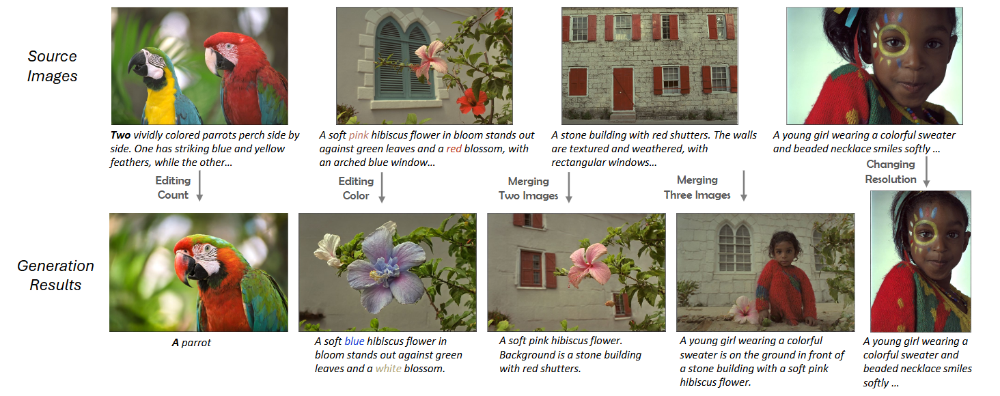
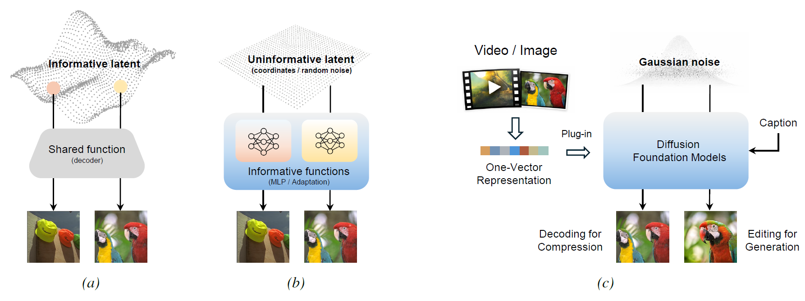
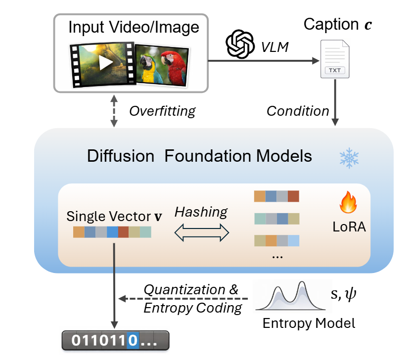
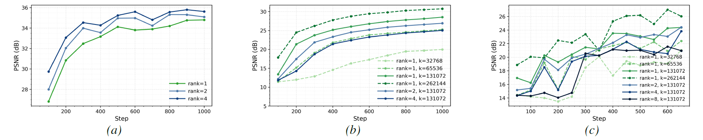
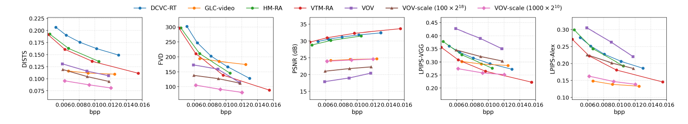
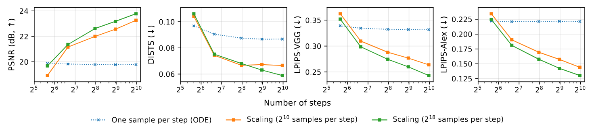
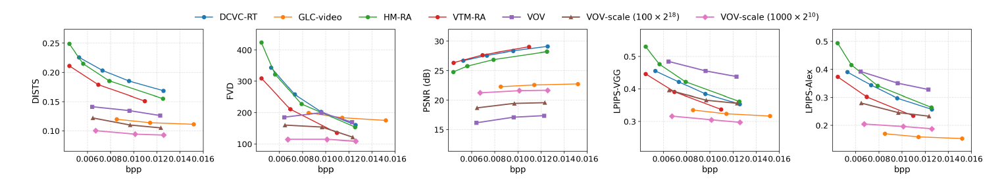
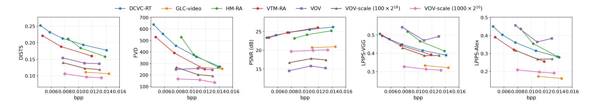
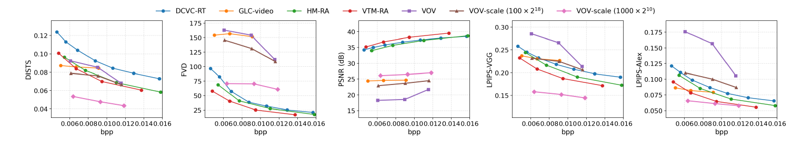

Drag to compare Ground Truth (left) and the selected compressed result (right).

Video editing results by changing the dog in the prompt to panda




We identity a key advantage of functional representation: it supports inference-time scaling for better performance naturally. In our framework, we can generate multiple samples per denoising steps, and select the most promising one for better compression quality.

Concatenation of LoRA for different videos enables composition of multiple videos.
ShakeNDry's background + Beauty's object and motion.
ShakeNDry's object + Beauty's background and motion.
Merging ShakeNDry and Beauty in the background of Beauty.
Merging ShakeNDry and Beauty in the background of ShakeNDry.



@misc{he2026compression,
title={Compression as Adaptation: Implicit Visual Representation with Diffusion Foundation Models},
author={Jiajun He and Zongyu Guo and Zhaoyang Jia and Xiaoyi Zhang and Jiahao Li and Xiao Li and Bin Li and José Miguel Hernández-Lobato and Yan Lu},
year={2026},
eprint={2603.07615},
}